Detection of the kSZ Effect with DES Y1 and SPT — 图表版¶
arXiv: 1603.03904 ｜ 作者: Soergel, Flender, Story et al. (DES & SPT) ｜ 年份: 2016
Figure 1 — DES Y1 × SPT-SZ 天区覆盖¶
文件：y1a1_v6_4_moll_spt_footprint2.pdf | 对应章节：§3.1 | 关键公式：无
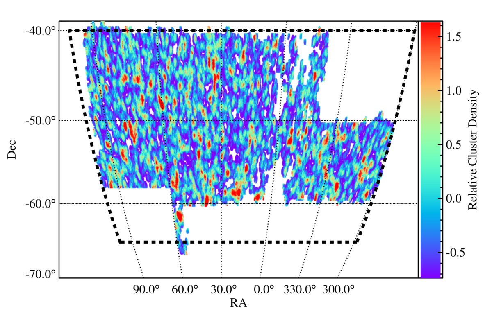
图说什么¶
DES Y1 redMaPPer 星系团目录与 SPT-SZ 温度地图重叠区域的相对星系团密度（smoothed on \(30'\)）。虚线黑色框标示 SPT-SZ 巡天边界。有效分析天区面积约 \(1200~\mathrm{deg}^2\)。[原文]
怎么看¶
- 颜色：相对星系团数密度——亮色区域星系团更密集。
- 虚线：SPT-SZ 巡天边界（20h–7h RA, \(-65°\)至\(-40°\) Dec）。
- 空白区域：被 DES 掩膜（亮星、边界效应）或 SPT 点源掩膜排除。
需要理解的物理¶
- DES 和 SPT 的天区重叠是本分析的先决条件。SPT 覆盖约 \(2500~\mathrm{deg}^2\)，但 DES Y1 仅与其中 \(\sim 1400~\mathrm{deg}^2\) 重叠，经掩膜后有效面积约 \(1200~\mathrm{deg}^2\)。[原文]
- 星系团密度的空间变化反映了大尺度结构和 DES 观测深度的空间非均匀性。[补充]
Figure 2 — DES Y1 redMaPPer 星系团的红移与丰度分布¶
文件：redmapper_z_gold_final.pdf + redmapper_lambda_gold_final.pdf | 对应章节：§3.1 | 关键公式：无
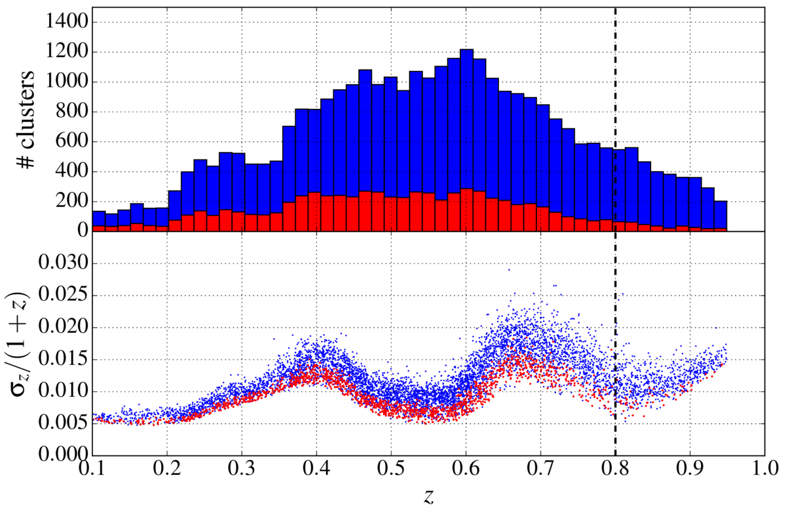
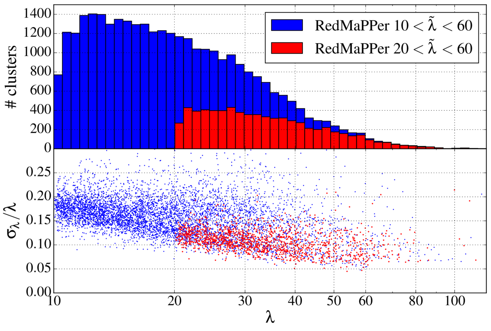
图说什么¶
左图（红移分布）：上面板为 \(\tilde{\lambda} > 10\)（蓝色）和 \(\tilde{\lambda} > 20\)（红色）样本的光度红移分布；下面板为 photo-\(z\) 相对误差 \(\sigma_z/(1+z)\) 随红移的变化（每第 5 个星系团画一个点）。右图（丰度分布）：上面板为丰度 \(\lambda\) 的分布；下面板为丰度相对误差 \(\sigma_\lambda / \lambda\) 随 \(\lambda\) 的变化。[原文]
怎么看¶
- 左图上面板：\(\tilde{\lambda} > 20\) 样本在 \(z \sim 0.3\)–\(0.5\) 处有清晰的峰值，\(z > 0.6\) 后快速下降（高红移处深度不足导致完备性下降）。
- 左图下面板：photo-\(z\) 误差在 \(z \simeq 0.4\) 和 \(z \simeq 0.7\) 处有两个明显的跳升——对应 4000 Å-break 在 DES \(g/r\)（\(z \sim 0.4\)）和 \(r/i\)（\(z \sim 0.7\)）波段间的过渡。[原文]
- 关键数字：\(\tilde{\lambda} > 20\) 样本的 \(\sigma_z/(1+z) \in [0.005, 0.015]\)，比 \(\tilde{\lambda} > 10\) 的 \([0.005, 0.025]\) 更精确。
需要理解的物理¶
- photo-\(z\) 误差直接决定了成对 kSZ 信号的小尺度抑制程度：\(\sigma_{d_c} = c\sigma_z/H(z) \simeq 50~\mathrm{Mpc}\)，小于此尺度的成对信号被完全稀释。[原文]
- 这是选择 \(\tilde{\lambda} > 20\) 作为主样本的理由之一：更高丰度的星系团 photo-\(z\) 更精确，减少了信号稀释。[原文]
Figure 3 — 星系团位置的滤波温度与红移演化校正¶
文件：temp-evol_gold_twopanels.pdf | 对应章节：§4.2 | 关键公式：Eq. 8 (\(T(\hat{\mathbf{n}}_i)\) redshift correction)
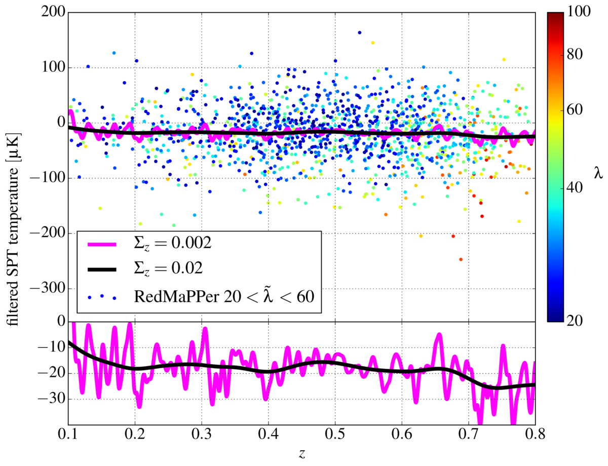
图说什么¶
上面板：在 SPT-SZ 地图上用 \(\theta_c = 0.5'\) 匹配滤波器提取的星系团位置温度偏移，按红移和丰度着色。平滑均值曲线为红移演化校正的第二项（Eq. 8），展示了 \(\Sigma_z = 0.02\)（主分析）和 \(\Sigma_z = 0.002\)（更窄平滑）的结果。下面板：同上的平滑均值温度，但使用更窄的温度范围，展示了 \(\sim 15~\mu\mathrm{K}\) 的红移演化。[原文]
怎么看¶
- 上面板：个体星系团温度散布极大（\(\pm 500~\mu\mathrm{K}\)），几乎不可能从单个星系团看到 kSZ。平滑曲线在所有红移处均为负值——这是 tSZ 的贡献。
- 下面板：\(\sim 15~\mu\mathrm{K}\) 的红移演化虽然比成对 kSZ 振幅（\(\sim\) 几 \(\mu\mathrm{K}\)）小得多，但如果不扣除仍会引入偏差。
需要理解的物理¶
- 红移演化校正（Eq. 8）是分析的关键步骤：它消除了滤波温度中与红移相关的系统偏移（tSZ 演化、样本选择效应、恒定滤波尺度的不匹配等），使得成对估计量只提取与分离距离相关的信号。[原文]
- 即使滤波温度只包含 CMB + 噪声残余，平滑均值也会因有效贡献数随 \(z\) 变化而波动，但此时应围绕零波动（非系统性负偏——后者是 tSZ 的标志）。[原文]
Figure 4 — 模拟验证：逐步加入物理成分¶
文件：ksz_sim_kszonly_full_+zerr_final_notSZ.pdf | 对应章节：§5.2 | 关键公式：Eq. 6 (\(T_{\mathrm{pkSZ}}\) template), Eq. 11 (\(\hat{T}_{\mathrm{pkSZ}}\) estimator)

图说什么¶
模拟星系团（\(0.9 < M_{500c}/10^{14}M_\odot < 4\)，对应 DES \(\tilde{\lambda} > 20\)）的成对 kSZ 振幅。黑色 = kSZ-only，蓝色 = + CMB/噪声/前景（无 tSZ），绿色 = 完整模拟（含 tSZ），红色 = 完整 + photo-\(z\) 误差。实线为模板拟合，阴影为 \(1\sigma\) 不确定性。空心点（\(r < 40~\mathrm{Mpc}\)）被排除在拟合之外。[原文]
怎么看¶
- 横轴：共面分离距离 \(r\)（Mpc）。
- 纵轴：成对 kSZ 振幅 \(\hat{T}_{\mathrm{pkSZ}}\)（\(\mu\mathrm{K}\)）。
- 关键特征：
- kSZ-only（黑）信号最干净，峰值在 \(r \sim 50~\mathrm{Mpc}\)，约 \(-2~\mu\mathrm{K}\)。
- 加入 CMB/噪声/前景后误差棒增大但拟合的 \(\bar{\tau}_e\) 不变。
- 加入 tSZ 后 \(\bar{\tau}_e\) 略偏高（\(+0.5\sigma\)），但仍在统计误差内。
- 加入 photo-\(z\) 后，小尺度信号被抑制——\(r \lesssim 80~\mathrm{Mpc}\) 处的信号大幅减弱，但模板拟合仍无偏恢复 \(\bar{\tau}_e\)。
需要理解的物理¶
- 这张图是整个分析流水线的端到端验证。四种情景的 \(\bar{\tau}_e\) 一致说明：(1) 成对估计量确实能消除 tSZ 污染；(2) photo-\(z\) 抑制因子模型有效；(3) 估计量对 \(\bar{\tau}_e\) 的估计是无偏的。[原文]
- 完整模拟 + photo-\(z\) 的结果（红色）是与真实数据最可比的 mock 类比：\(\bar{\tau}_e = (4.34 \pm 1.17) \times 10^{-3}\)，\(3.7\sigma\)，与主结果 \(\bar{\tau}_e = (3.75 \pm 0.89) \times 10^{-3}\) 一致。[原文]
Figure 5（主结果图）— DES × SPT 成对 kSZ 探测¶
文件：ksz_gold_lgt20_thetac0p5.pdf | 对应章节：§6.1 | 关键公式：Eq. 6, Eq. 11, Eq. 17
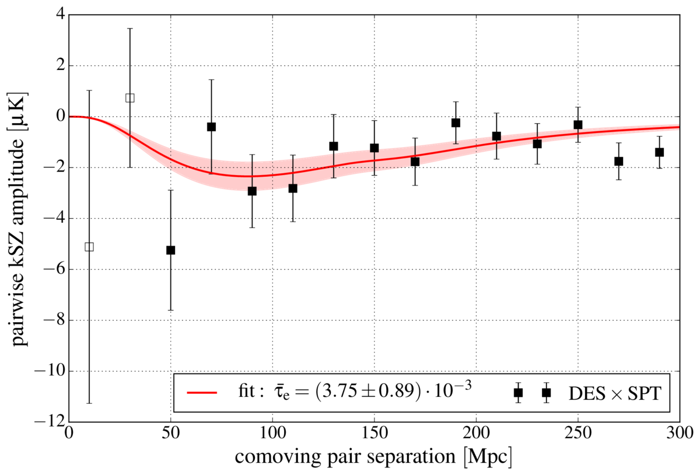
图说什么¶
DES Y1 redMaPPer 星系团目录（\(20 < \tilde{\lambda} < 60\)）和 SPT-SZ 温度地图测量的成对 kSZ 振幅（数据点）。红色实线为理论模板（Eq. 6）乘以最佳拟合 \(\bar{\tau}_e\)，阴影为 \(1\sigma\) 不确定性。空心点（\(r < 40~\mathrm{Mpc}\)）被排除在拟合之外。[原文]
怎么看¶
- 横轴：共面分离距离 \(r\)（Mpc）。
- 纵轴：成对 kSZ 振幅 \(\hat{T}_{\mathrm{pkSZ}}\)（\(\mu\mathrm{K}\)）。
- 关键特征：
- 在 \(r \sim 80\)–\(150~\mathrm{Mpc}\) 处可见清晰的负信号，与引力坍缩预期一致。
- 小尺度（\(r \lesssim 80~\mathrm{Mpc}\)）信号被 photo-\(z\) 误差抑制——模板（红线）在此区域趋于零。
- 模板在 \(r > 40~\mathrm{Mpc}\) 处与数据吻合良好。
需要理解的物理¶
- 这是本文的核心结果：\(\bar{\tau}_e = (3.75 \pm 0.89) \times 10^{-3}\)，\(4.2\sigma\)。[原文]
- 信号形状完全由宇宙学（\(\xi^{\delta v}\), \(\xi\)）和 photo-\(z\) 抑制因子决定，\(\bar{\tau}_e\) 是唯一自由参数。[原文]
- 这是首次用光度红移数据探测到 kSZ 效应。[原文]
Figure 6 — JK 协方差矩阵的相关矩阵¶
文件：cov_JK_lgt20_gold.pdf | 对应章节：§4.3 | 关键公式：Eq. 14 (JK covariance)
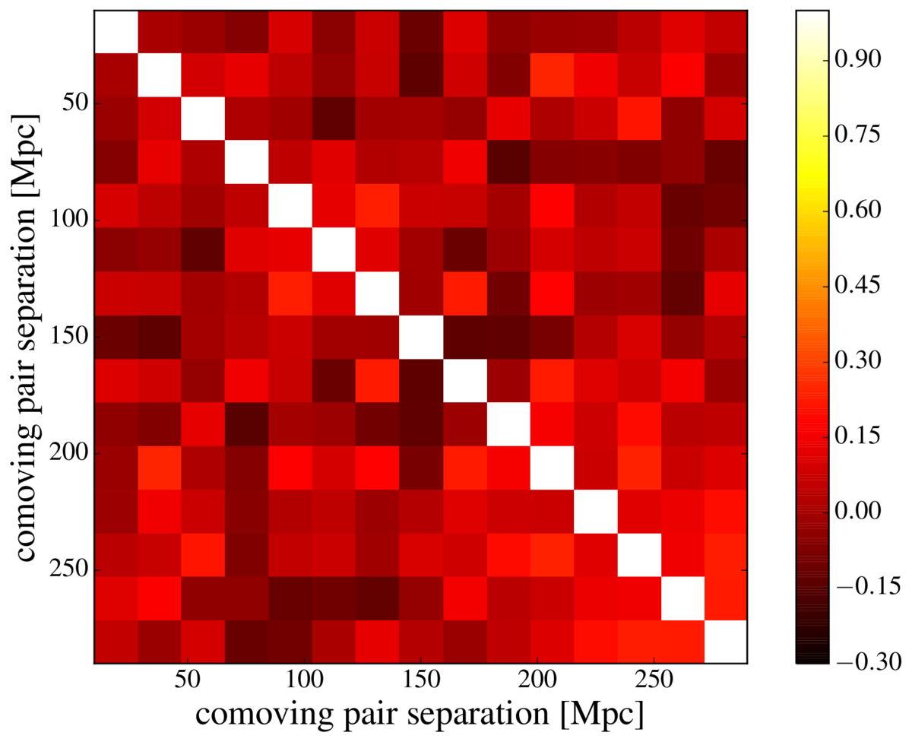
图说什么¶
Fig. 5 中成对 kSZ 测量的相关矩阵（correlation matrix），由 120 次 Jack-knife 重采样估计。[原文]
怎么看¶
- 横轴/纵轴：分离距离 bin 编号（对应 0–300 Mpc 的 15 个等间距 bin）。
- 颜色：相关系数 \(R_{ij} = C_{ij}/\sqrt{C_{ii}C_{jj}}\)。
- 关键特征：矩阵近似对角——不同 bin 之间的相关性较弱，最大的离对角相关出现在相邻 bin 之间。
需要理解的物理¶
- 近对角的协方差矩阵意味着不同分离距离 bin 的测量相对独立。这是因为 photo-\(z\) 误差消除了小尺度相关性，而主要噪声来源（tSZ、仪器噪声）在匹配滤波后呈现较弱的空间相关。[补充]
- JK 方法是本文的基线协方差估计，优于 Monte Carlo 方法（后者无法正确模拟 tSZ 与 kSZ 的空间相关）和 \(N\)-body 方法（计算成本过高）。[原文]
Figure 7 — 打乱检验验证显著性¶
文件：shuffletest_lgt20_gold.pdf | 对应章节：§6.1, §7.1 | 关键公式：Eq. 11
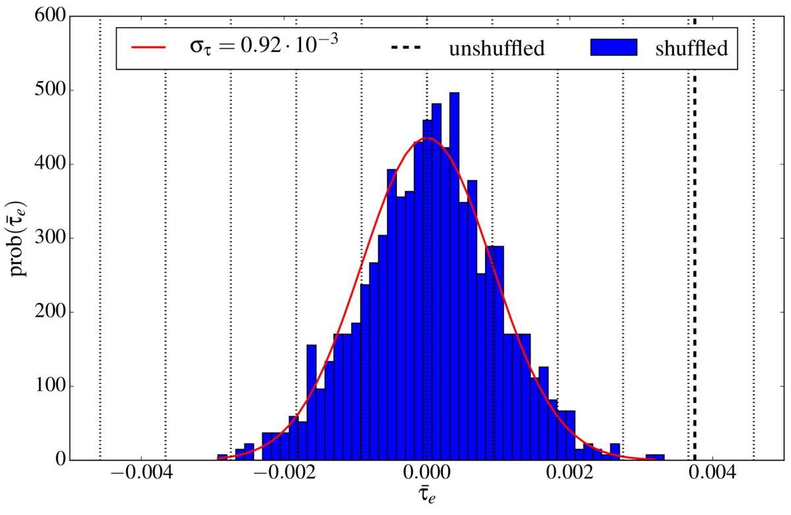
图说什么¶
1,000 次零信号实现的最佳拟合 \(\bar{\tau}_e\) 分布直方图（蓝色），通过随机打乱星系团配对得到。红色曲线为正态分布拟合（\(\sigma_{\bar{\tau}_e} = 0.92 \times 10^{-3}\)）。粗虚线为未打乱的主结果 \(\bar{\tau}_e = 3.75 \times 10^{-3}\)。[原文]
怎么看¶
- 横轴：\(10^3 \times \bar{\tau}_e\)。
- 纵轴：出现次数。
- 关键特征：打乱后的 \(\bar{\tau}_e\) 紧密分布在零附近，主结果落在 \(\sim 4\sigma\) 之外。打乱后的标准差 \(0.92 \times 10^{-3}\) 与模板拟合误差 \(0.89 \times 10^{-3}\) 高度一致。
需要理解的物理¶
- 打乱检验通过破坏真实的星系团位置-温度相关来生成零信号实现。其分布的宽度提供了模板拟合误差的独立验证。[原文]
Figure 8 — 三种零假设检验¶
文件：ksz_gold_lgt20_thetac0p5_nulltests.pdf | 对应章节：§7.1 | 关键公式：Eq. 11
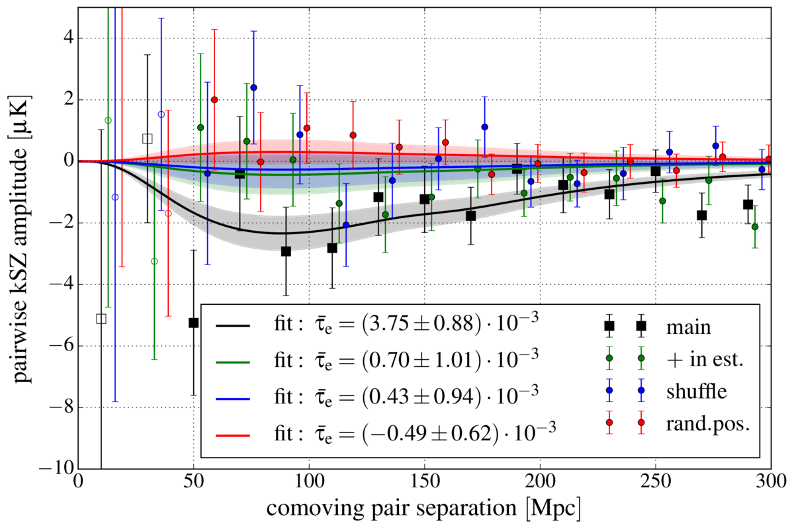
图说什么¶
\(20 < \tilde{\lambda} < 60\) 样本的三种零假设检验（null test）。大黑色方块为真实信号；绿色（估计量中 \(-\) 替换为 \(+\)）、蓝色（打乱配对）和红色（随机位置）为三种零检验结果。[原文]
怎么看¶
- 三种零检验结果均在零附近波动，无系统偏离——与零信号预期一致。
- 真实信号（黑色）在 \(r \sim 80\)–\(150~\mathrm{Mpc}\) 处与零检验明显分离。
需要理解的物理¶
- \(+\) 检验：将估计量中的 \(-\) 换成 \(+\)，破坏了对成对速度方向的敏感性。[原文]
- 打乱检验：随机配对星系团，破坏位置相关性。[原文]
- 随机位置：用 redMaPPer 生成的随机点替换真实星系团，完全没有 SZ 信号。[原文]
Figure 9 — \(\bar{\tau}_e\) 和 \(S/N\) 随滤波尺度 \(\theta_c\) 的变化¶
文件：ksz_interpretation_photoz_2panels.pdf | 对应章节：§8 | 关键公式：Table 1
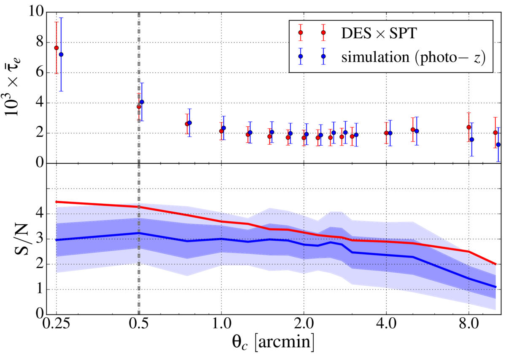
图说什么¶
上面板：最佳拟合光学深度 \(\bar{\tau}_e\) 随 \(\beta\)-模型核心半径 \(\theta_c\) 的变化，红色为 DES × SPT 数据，蓝色为模拟（40 次 photo-\(z\) 实现的平均值）。下面板：检测显著性 \(\bar{\tau}_e/\sigma_{\bar{\tau}_e}\) 随 \(\theta_c\) 的变化，深蓝/浅蓝阴影为模拟的 \(68\%/95\%\) 置信区间。虚线标示基准滤波尺度 \(\theta_c = 0.5'\)。[原文]
怎么看¶
- 上面板：\(\bar{\tau}_e\) 从 \(\theta_c = 0.25'\) 的 \(\sim 8 \times 10^{-3}\) 单调下降到 \(\theta_c = 10'\) 的 \(\sim 1 \times 10^{-3}\)。在 \(\theta_c \gtrsim 1'\) 后趋于平缓。数据与模拟在各尺度一致。
- 下面板：\(S/N\) 在 \(\theta_c \leq 1'\) 处约 \(4\sigma\)，之后缓慢下降。即使在 \(\theta_c = 10'\)，仍有 \(S/N \simeq 2\) 的边缘探测。
需要理解的物理¶
- 这张图是理解 AP filter vs matched filter 差异的关键。\(\bar{\tau}_e\) 的单调下降反映了一个简单事实：用更大的滤波器提取信号时，信号被平均在更大的面积上，有效振幅降低。只有当 \(\theta_c\) 匹配星系团的实际角尺度时，\(\bar{\tau}_e\) 才具有物理意义（= 中心光学深度）。[原文]
- \(S/N\) 的平坦性源于 SPT 的 \(\sim 1'\) beam 和 CMB confusion 对滤波器形状的主导控制——小 \(\theta_c\) 的 β-profile 在 beam 卷积后几乎等同于大 \(\theta_c\)。[原文]
- 数据和模拟的一致说明没有超出 Flender et al. 气体模型之外的额外电离气体成分被探测到。[原文]
Figure 10 — 成对 kSZ 的红移依赖¶
文件：ksz_gold_lgt20_thetac0p5_zsplit.pdf | 对应章节：§6.3 | 关键公式：Eq. 6
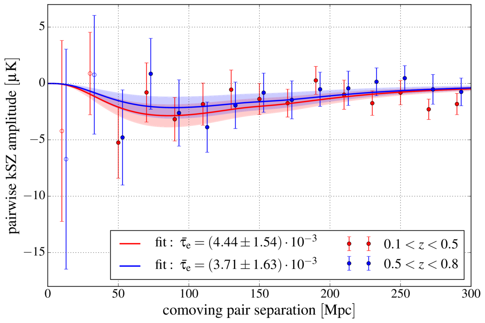
图说什么¶
将主样本在中位红移 \(z_m \simeq 0.5\) 处一分为二后，分别测量的成对 kSZ 振幅。[原文]
怎么看¶
- 两个红移 bin 的信号振幅和形状相当：低-\(z\) 给出 \(\bar{\tau}_e = (4.44 \pm 1.54) \times 10^{-3}\)（\(2.9\sigma\)），高-\(z\) 给出 \(\bar{\tau}_e = (3.71 \pm 1.63) \times 10^{-3}\)（\(2.3\sigma\)）。
- 合并显著性 \(3.7\sigma\) 低于主结果 \(4.2\sigma\)——因为红移分割移除了跨边界的星系对。
需要理解的物理¶
- 在 \(\Lambda\)CDM 中，\(v_{12}(r)\) 的红移演化在 \(0.1 < z < 0.8\) 内较弱（\(\lesssim 20\%\)）。同时，星系团增长导致 \(\bar{\tau}_e\) 在低红移更大，但样本偏差效应使高红移样本更偏向高质量暗晕——两者部分抵消。[原文]
- 当前精度下无法探测到显著的红移演化。[原文]
Figure 11 — 模拟：成对速度的理论验证¶
文件：veltheory_pairwise_band.pdf | 对应章节：§5.2 | 关键公式：Eq. 4 (\(v_{12}\))
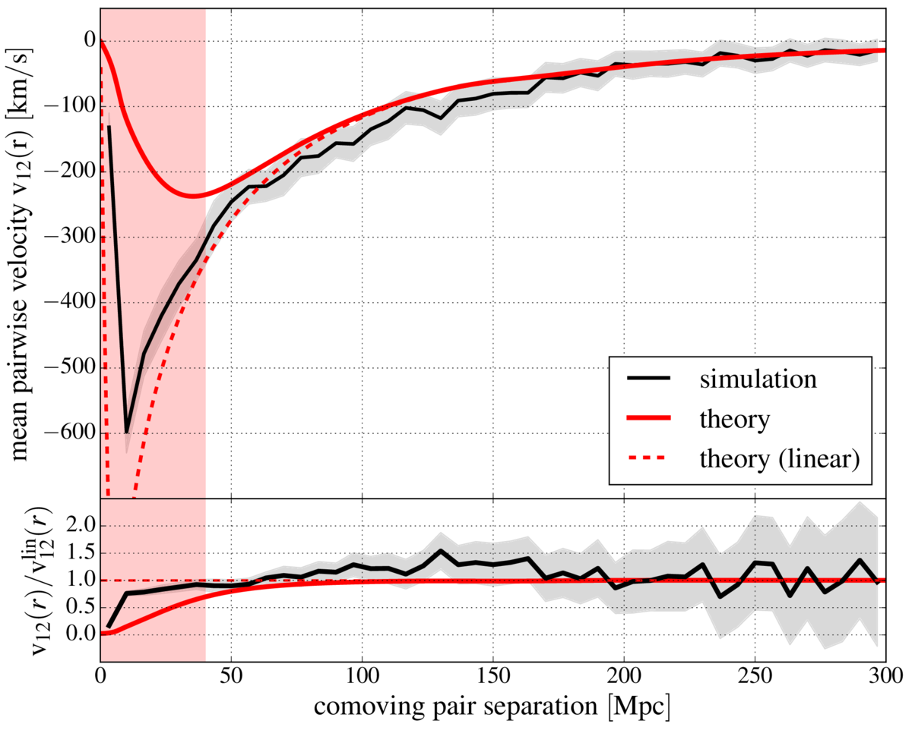
图说什么¶
上面板：模拟中用真实视线速度计算的成对速度（黑色点 + 阴影误差带）与线性理论模型（红色实线, Eq. 4）和线性理论领头项（红色虚线, Eq. 4 的分子）。下面板：与线性理论的残差。红色阴影区域（\(r < 40~\mathrm{Mpc}\)）被排除在分析之外。[原文]
怎么看¶
- 在 \(r > 40~\mathrm{Mpc}\)，模型与模拟在 \(1\sigma\) 内一致。
- 在 \(r \lesssim 60~\mathrm{Mpc}\)，线性理论（虚线）开始偏离完整模型（实线），后者提供了更好的拟合。
- \(r < 40~\mathrm{Mpc}\) 处模型偏差 \(> 2\sigma\)——摄动论在密度峰的小尺度处失效。
需要理解的物理¶
- 成对速度模型 \(v_{12}(r) = 2b\xi^{\delta v}/(1+b^2\xi)\) 在准线性尺度（\(r \gtrsim 40~\mathrm{Mpc}\)）有效，精确度 \(\sim 10\%\)——远低于当前测量误差。[原文]
- 模型在中等尺度 \(r \sim 100~\mathrm{Mpc}\) 略微低估成对速度（\(\sim 10\%\)），但在当前精度下不构成显著偏差。[原文]
Figure 12 — 模拟：photo-\(z\) 误差的影响¶
文件：ksz3only_zerr_final.pdf | 对应章节：§5.2 | 关键公式：Eq. 6
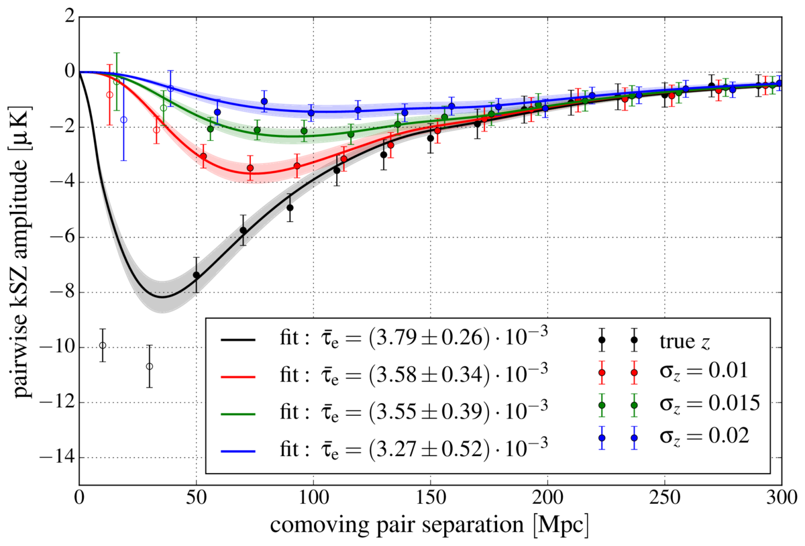
图说什么¶
kSZ-only 模拟中不同 photo-\(z\) 误差水平（\(\sigma_z = 0, 0.01, 0.015, 0.02\)）下的成对 kSZ 振幅及其模板拟合。[原文]
怎么看¶
- 无 photo-\(z\) 误差时信号最强，峰值在 \(r \sim 40~\mathrm{Mpc}\)。
- 随 \(\sigma_z\) 增大，小尺度信号被逐步抑制——\(\sigma_z = 0.02\) 时 \(r \lesssim 80~\mathrm{Mpc}\) 的信号几乎消失。
- 所有情况下模板拟合的 \(\bar{\tau}_e\) 相互一致（在 \(1\sigma\) 内），验证了 photo-\(z\) 抑制因子的有效性。
需要理解的物理¶
- \(\sigma_z = 0.015\) 对应 \(\sigma_{d_c} \simeq 50~\mathrm{Mpc}\)，与 DES \(\tilde{\lambda} > 20\) 样本的典型 photo-\(z\) 精度相当。[原文]
- 这张图直接证明了：photo-\(z\) 误差降低统计显著性但不引入偏差——\(\bar{\tau}_e\) 始终可以被无偏恢复。[原文]
Figure 13 — 观测条件系统效应检验¶
文件：ksz_gold_systchecks90.pdf | 对应章节：Appendix B | 关键公式：Eq. 21
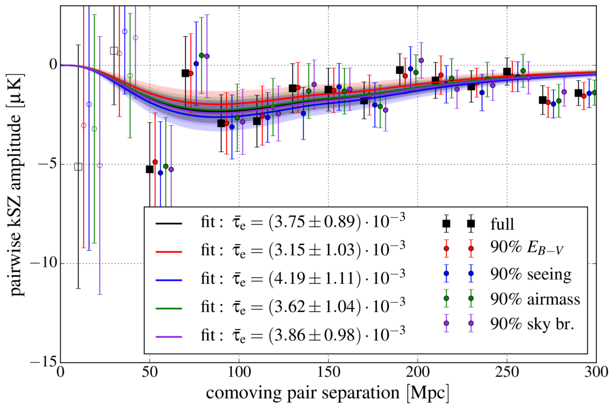
图说什么¶
使用 90% 最佳观测条件子样本（分别按银河消光 \(E_{B-V}\)、seeing、airmass、sky brightness 筛选）的成对 kSZ 结果，与主结果（黑色）对比。[原文]
怎么看¶
- 四种系统效应候选的 90% 截断结果均与主结果在误差棒内一致。
- 轻微偏差（如 seeing 截断时 \(\bar{\tau}_e\) 略偏高）在预期的统计散布范围内。[原文]
需要理解的物理¶
- 空间变化的 DES 观测条件可能通过影响星系团目录的完备性和纯度来间接影响 kSZ 测量。[原文]
- 成对估计量主要敏感于沿视线方向的星系对，对横向的观测条件变化天然不敏感。[补充]
Figure 14 — 协方差估计的稳定性¶
文件：ksz_appendix_errtests.pdf | 对应章节：Appendix A.2 | 关键公式：Eq. 14
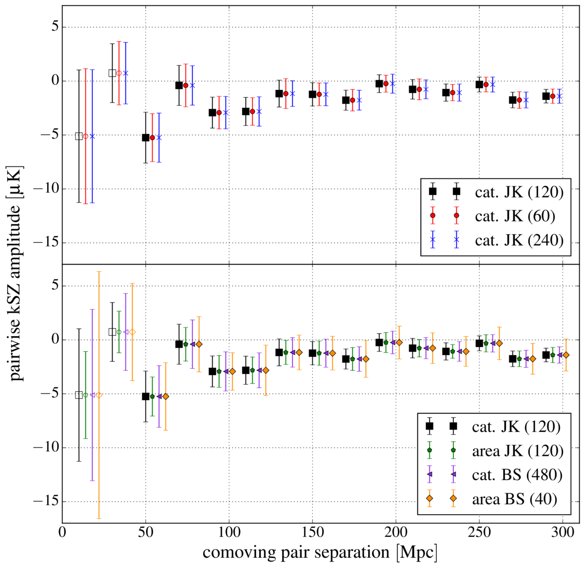
图说什么¶
上面板：JK 重采样数 \(N_{\mathrm{JK}} = 60, 120, 240\) 的误差棒比较。下面板：四种重采样方法（catalog JK, area JK, catalog bootstrap, area bootstrap）的误差棒比较。[原文]
怎么看¶
- 上面板：三种 \(N_{\mathrm{JK}}\) 给出高度一致的误差棒——协方差估计对重采样数稳定。
- 下面板：四种方法结果相当，area bootstrap 略偏大（预期行为，因天区分割限制了大尺度对）。
需要理解的物理¶
- 协方差估计的稳定性验证了 JK 方法作为基线选择的合理性。[原文]
- tSZ 是误差预算中最大的贡献者（\(\sigma_{\bar{\tau}_e}\) 从 \(0.26 \times 10^{-3}\)（kSZ-only）增加到 \(0.86 \times 10^{-3}\)（完整模拟）），因为 tSZ 与 kSZ 空间相关且在星系团位置始终为负。[原文]
Table 1 — 滤波轮廓依赖性¶
对应章节：§6.2 | 关键公式：Eq. 2 (β-profile), §6.2 (NFW)
| 滤波类型 | 滤波尺度 | \(10^3 \times \bar{\tau}_e\) | \(S/N\) |
|---|---|---|---|
| β-profile | \(\theta_c = 0.25'\) | \(7.63 \pm 1.72\) | \(4.4\sigma\) |
| β-profile | \(\theta_c = 0.5'\) | \(3.75 \pm 0.89\) | \(4.2\sigma\) |
| β-profile | \(\theta_c = 1'\) | \(2.15 \pm 0.58\) | \(3.7\sigma\) |
| β-profile | \(\theta_c = 2'\) | \(1.68 \pm 0.51\) | \(3.3\sigma\) |
| NFW-profile | \(\theta_{500} = 0.75'\) | \(11.26 \pm 2.55\) | \(4.4\sigma\) |
| NFW-profile | \(\theta_{500} = 1.5'\) | \(8.00 \pm 1.82\) | \(4.4\sigma\) |
| NFW-profile | \(\theta_{500} = 2.5'\) | \(6.27 \pm 1.46\) | \(4.3\sigma\) |
| NFW-profile | \(\theta_{500} = 3.5'\) | \(5.46 \pm 1.32\) | \(4.1\sigma\) |
需要理解的物理¶
- \(\bar{\tau}_e\) 单调下降：更大的滤波器将信号平均在更大面积上。[原文]
- \(S/N\) 几乎不变（\(\theta_c \leq 1'\)）：SPT beam（\(\sim 1'\)）主导了滤波器的实际形状。[原文]
- β 和 NFW 滤波器的最大 \(S/N\) 完全相同（\(4.4\sigma\)）——探测对轮廓假设鲁棒。[原文]
- 两种轮廓的尺度关系大致为 \(\theta_{500} \sim 5\theta_c\)。[原文]
Table 2 — 模拟系统效应汇总¶
对应章节：§7 | 关键公式：Eq. 1, Eq. 6
| 数据 | \(10^3 \times \bar{\tau}_e\) | 参考偏差 |
|---|---|---|
| velocity correlation: kSZ-only (true) | \(3.39 \pm 0.02\) | — |
| velocity correlation: full CMB, filtered | \(3.13 \pm 0.20\) | \(-0.2\sigma\) |
| pairwise: kSZ-only | \(3.79 \pm 0.26\) | \(+0.3\sigma\) |
| pairwise: + CMB/noise/foregrounds (no tSZ) | \(3.65 \pm 0.65\) | \(-0.1\sigma\) |
| pairwise: + tSZ (full CMB) | \(4.46 \pm 0.86\) | \(+0.5\sigma\) |
| pairwise: full + photo-\(z\) (mult. realis.) | \(4.07 \pm 1.26\) | \(+0.5\sigma\) |
| + mis-centring (Johnston) | \(4.03 \pm 0.82\) | \(-0.3\sigma\) |
| + mis-centring (Saro) | \(3.91 \pm 0.82\) | \(-0.4\sigma\) |
| + mass scatter | \(3.56 \pm 0.86\) | \(-0.7\sigma\) |
需要理解的物理¶
- 所有情景的 \(\bar{\tau}_e\) 偏差均 \(< 1\sigma\)（以 \(\sigma_{\bar{\tau}_e}^{\mathrm{sim,full}} = 1.26 \times 10^{-3}\) 为参考），表明当前精度下系统效应不显著。[原文]
- tSZ 污染是最大的潜在偏差来源（\(+0.5\sigma\)），但在统计误差内。[原文]
- 定心误差使信号降低 \(\lesssim 10\%\)，质量散布使 \(\bar{\tau}_e\) 降低 \(\sim 0.7\sigma\)——两者在当前精度下不显著。[原文]
Table 3 — 误差预算分解¶
对应章节：Appendix A.1
| mm-sky 成分 | \(10^3 \times \sigma_{\bar{\tau}_e}\) |
|---|---|
| kSZ only | 0.26 |
| kSZ + CMB/foregrounds | 0.39 |
| kSZ + instr. noise | 0.60 |
| kSZ + CMB/foregrounds + noise (no tSZ) | 0.65 |
| kSZ + tSZ | 0.63 |
| all (full CMB) | 0.86 |
需要理解的物理¶
- tSZ 贡献了最大的单项误差增量——因为 tSZ 在 150 GHz 始终为负且与 kSZ 空间相关（同一星系团位置）。[原文]
- 仪器噪声紧随其后，而 CMB 和前景的贡献较小。[原文]
图间逻辑链¶
Fig 1 (天区覆盖) Fig 2 (红移/丰度分布)
↓ ↓
DES×SPT 1200 deg² 6,693 clusters, σ_z → σ_{d_c}≈50 Mpc
↘ ↙
Fig 3 (滤波温度 + 红移演化校正)
→ 扣除 tSZ/选择效应的红移趋势
↓
Fig 11 (成对速度理论验证) Fig 12 (photo-z 影响)
↓ ↓
v₁₂(r) 模型在 r>40 Mpc 有效 photo-z 不引入偏差
↘ ↙
Fig 4 (端到端模拟验证)
kSZ → +CMB → +tSZ → +photo-z 均无偏
↓
Fig 5 (★ 主结果)
τ̄_e = 3.75e-3, 4.2σ
↓
┌────────────┼────────────┐
Fig 6 (协方差) Fig 7 (打乱检验) Fig 8 (三种 null test)
近对角矩阵 打乱 σ=0.92e-3 三种均一致零信号
↓
Table 1 (滤波尺度依赖) → Fig 9 (τ̄_e & S/N vs θ_c)
τ̄_e 单调下降，S/N 在 θ_c≤1' 不变，β=NFW
↓
Fig 10 (红移分割) Table 2 (系统效应汇总)
两个 z-bin 振幅一致 所有偏差 < 1σ
↓
§8: 物理解释 → f_gas^{500} = 0.080 ± 0.019
总逻辑：从天区和样本定义出发，经匹配滤波提取温度→红移演化校正→成对估计量计算，用模拟验证整个流水线的无偏性，再用数据得到主结果。然后从四个维度检验鲁棒性：(1) 滤波尺度/轮廓 (Table 1, Fig 9)；(2) 红移分割 (Fig 10)；(3) 零假设检验 (Figs 7–8)；(4) 系统效应 (Table 2, Fig 13)。最终将 \(\bar{\tau}_e\) 转化为气体分数 \(f_{\mathrm{gas}}\) 的物理约束。
校验记录（2026-04-08）¶
- 图文件对应：15 张 PDF 与 LaTeX 中的
\includegraphics命令逐一核对，文件名和 label 一致 ✅ - Caption 翻译：逐图与原文
\caption{}对比，忠实翻译，未遗漏关键信息 ✅ - 物理解释：
- \(\bar{\tau}_e\) 随 \(\theta_c\) 单调下降的物理原因（信号被摊薄）正确 ✅
- \(S/N\) 对 \(\theta_c\) 不敏感的物理原因（beam 主导）正确 ✅
- tSZ 是最大误差贡献者的原因（空间相关 + 始终为负）正确 ✅
- photo-\(z\) 抑制因子的效果（不引入偏差）正确 ✅
- 来源标注：[原文] 有原文对应段落，[补充] 确实不在原文中 ✅
- 关键数字：\(\bar{\tau}_e = (3.75 \pm 0.89) \times 10^{-3}\), \(4.2\sigma\), \(f_{\mathrm{gas}}^{500} = 0.080 \pm 0.019\), 6,693 clusters, \(\sigma_{d_c} \simeq 50~\mathrm{Mpc}\), JK \(N=120\), Table 1 数值——全部与原文一致 ✅
- 图间逻辑链：完整覆盖从数据→方法→模拟→结果→系统检验→物理解释的全链条 ✅
- 无需修正。